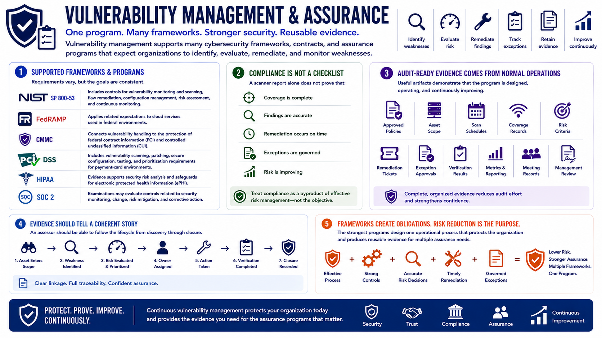

What Is Vulnerability Management?
Vulnerability Management and Compliance
Connecting to LMS... Progress: in progress
Version 1.0 | Date: 2026-06-18 | Educational overview of vulnerability management concepts.

Narration
Vulnerability management supports many cybersecurity frameworks, contracts, and assurance programs. Requirements vary, but they commonly expect organizations to identify weaknesses, evaluate risk, remediate findings, track exceptions, and retain evidence of ongoing operation.
NIST SP 800-53 includes controls related to vulnerability monitoring and scanning, flaw remediation, configuration management, risk assessment, and continuous monitoring. FedRAMP applies related expectations to cloud services used in federal environments.
CMMC connects vulnerability handling to the protection of federal contract information and controlled unclassified information. PCI DSS includes vulnerability scanning, patching, secure configuration, testing, and prioritization requirements for payment-card environments.
HIPAA-regulated organizations may use vulnerability-management evidence to support security risk analysis and safeguards for electronic protected health information. SOC 2 examinations may evaluate controls related to security monitoring, change, risk mitigation, and corrective action.
Compliance should not reduce the program to a checklist. A scanner report alone does not prove that coverage is complete, findings are accurate, remediation occurs on time, exceptions are governed, or risk is improving.
Audit-ready evidence comes from normal operations. Useful artifacts include approved policies, asset scope, scan schedules, coverage records, risk criteria, remediation tickets, exception approvals, verification results, metrics, meeting records, and proof of management review.
Evidence should tell a coherent story from discovery through closure. An assessor should be able to see how an asset entered scope, how a weakness was identified and prioritized, who owned the response, what action occurred, and how completion was verified.
Frameworks create obligations, but risk reduction remains the purpose. The strongest programs design one operational process that protects the organization and produces reusable evidence for multiple assurance needs.